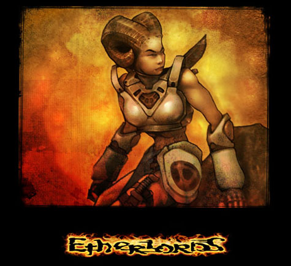

Назад
Содержание
Вперед
Balork

Пустыня
Два всадника не спеша ехали по выжженной бледными лучами раскаленного солнца земле пустыни. Вокруг - только редкие мелкие кустарники да пески. Вдали виднелась длинная горная цепь, самая высокая гора которой изрыгала из своего жерла густой черный дым, который резко контрастировал со светло-голубым безоблачным небом.
Оба путника восседали на странных больших двуногих животных. Оба были в тяжелых доспехах и имели при себе огромные топоры. Оба обладали мощным телосложением и смотрелись более, чем внушительно. Оба были хаотами. Одного из них, с длинным "конским хвостом" на голове и шрамом на левой щеке звали Хаген. Его спутника, который носил железный шлем и все время смотрел куда-то вдаль, словно вгрызаясь взглядом в бесконечную голубизну неба и желтизну песков, звали Хорнгард.
Они не разговаривали. Хаген хмуро смотрел на спутника - так смотрит офицер на рядового. В принципе, так оно и было: Хаген был более опытным воином и уже долгое время служил под началом своего Лорда. Сам Хорнгард не обращал внимания на неодобряющие взгляды старшего товарища и продолжал вглядываться вдаль.
- Что ты там высматриваешь? - раздраженно спросил Хаген.
- Ничего особенного, просто смотрю... До замка синтетов еще далеко, а когда смотришь долго в одну точку, то от всего отвлекаешься, и время летит быстрее... - ответил Хорнгард.
- Долго же тебе еще смотреть придется! - усмехнулся Хаген. - До Железного Замка еще дня два пути!
- Ну и что? Мне, если честно, плевать! Смотрю себе и смотрю, нельзя что ли?
- Отчего же нет? Смотри на здоровье...
Скоро стемнело, и воины решили сделать привал. Расположившись на теплой земле, они откупорили по фляге эля из дорожных запасов и сделали по глотку. Хорнгард, ни слова не говоря, лег на землю и уснул. Хаген посмотрел на него, вздохнул и последовал его примеру.
Молодой хаот проснулся оттого, что прямо в глаза ему бил яркий солнечный свет. Прикрыв лицо ладонью, он встал и огляделся. Ни Хагена, ни ездовых зверей рядом не было. Только его рюкзак одиноко лежал на песке.
- Ч... Что это значит?! - с трудом выговорил он. - Эй, Хаген! Что за шутки, черт тебя подери?!
Ответа не последовало. Хаот еще раз осмотрелся. В поле зрения никого не было.
- Ах, проклятье! - воскликнул он. - Что еще за приключение на мою бедную голову?!
С этими словами он поднял рюкзак и пошел вперед по тропе, не видя другого выхода из сложившейся ситуации.
Так он шел два дня. На третий силы постепенно начали уходить. Запасы питья тоже начали подходить к концу. Хорнгард понимал, что долго он так не продержится.
Вечером он сидел на песке, отдыхая от долгой ходьбы. Он смотрел вдаль, и теперь желание что-то там увидеть не давало ему покоя. Он до боли напрягал глаза, глядя туда, где должен был быть замок синтетов. Но ничего не было видно, только бесконечные пески и дальние горы...
Как ни старался Хорнгард экономить провизию, но когда-нибудь все заканчивается. На пятый день пути он, борясь с ужасной жаждой, сделал последний глоток воды.
Он снова посмотрел вдаль. Ничего, кроме того, что он уже видел, не открылось его взору. Сердце хаота наполнила тоска вперемешку со страхом. Он упал на колени и... заплакал. Наверное, впервые за всю историю расы хаот плакал. Слуги Хаоса были на редкость выносливыми воинами, которых ничто не могло испугать. Но Хорнгард заплакал. От отчаяния и безысходности, от осознания собственной беспомощности. Наконец, от страха мучительной смерти. Он плакал, и слезы его тут же высыхали. "Кто же вздумал так меня погубить? Кому нужна моя жалкая жизнь? Чьи же это ужасные шутки?" - думал он. И он не мог найти ответов на свои вопросы.
Через некоторое время Хорнгард немного пришел в себя. Ужасный страх начал понемногу отступать. "Надо взять себя в руки!" - подумал хаот. - "Надо идти. Надо идти дальше и держаться до последнего. Отступать нельзя!"
"Отступать нельзя!" - это была главная заповедь хаотов. Никогда и ни под каким видом не могли они бежать от опасности. С малолетства их всех учили смотреть опасности в лицо. Их неустрашимость и ршительность была залогом многих военных побед. И Хорнгард решил идти вперед до победного конца или до смерти. И только тогда у него был шанс выйти живым, пусть даже ничтожно малый.
Он шел все дальше и дальше. Жажда мучила его нещадно, но он не желал сдаваться. И вдруг он, присмотревшись, увидел вдали очертания двух небольших башен. И надежда снова проснулась в нем; из последних сил он рванул вперед. Вскоре он увидел, что эти две башни были ни чем иным, как фортами синтетов. На верхушках стояли их воины с длинными металлическими копьями.
Хаот подбежал к укреплениям и в бессилии рухнул наземь.
- Воды! - слабым голосом попросил он. - Воды!.. Пожалуйста...
Синтеты не ответили. Они просто спустились вниз, и подошли к лежащему хаоту.
- Назови себя! - произнес один из них, облаченный в железные доспехи.
- Хорнгард... Хаот...
- Зачем ты здесь? - спросил второй, у которого правая рука была металлической.
- Я... Еду в ваш замок... Здесь, близко... Лорду... Послание...
Синтеты переглянулись. Тот, что был с железной рукой, схватил ею хаота за шиворот и поставил на ноги. Его напарник спросил:
- Какое послание? Говори!
Хорнгард кашлянул.
- Мирное... соглашение... Предложение об альянсе против... виталов и кинетов...
- Ты один?
- Со мной был мой соратник, Хаген. Но он куда-то пропал...
- Хмм... Пропал, говоришь... - синтет в доспехах лукаво улыбнулся. А это - не он ли?
Он показал рукой на правую башню, которую венчал длинный кол с насаженной на него головой Хагена.
В глазах хаота отразился смертельный ужас. Он понял, что шансов у него уже нет, да и никогда не было. Синтет захохотал.
- Ха-ха-ха! Не правда ли, чудесное зрелище? Это ведь твой друг? Можешь не отвечать, хаот! Это видно по твоим глазам.
- Что это?.. - прошептал Хорнгард.
- Объясню! - ответил синтет. - Нам не нужны союзы с хаотами! Мы в состоянии сами вести войну, без вашей жалкой поддержки! Виталы и кинеты слабы, как и вы, потому что вы - живые. Вы боитесь потерять свою жизнь, а мы - нет! Для нас смерть - всего лишь поломка, которую можно легко восстановить, заменив пару деталей! Вот в чем наша сила! Мы легко сокрушим вас и станем Расой Владык! А вы двое - стали игрушками в наших руках. Немного магии, немного фантазии - и нам удалось развести вас, пустить в разных направлениях к одному пункту назначения... Остальное - дело техники! А вашему Лорду мы передадим, что вас убили кинеты или виталы, устроившие засаду. Двойная выгода - избавились от ненужного мусора и спровоцировали очередной поход на кинетов или виталов... Мы еще подумаем, на кого натравить ваши войска. Так что прощайся с жизнью, жалкий хаот!
С этими словами воин Синтеза взмахнул копьем и нанес удар...
* * *
- Эй, салага, вставай уже, утро давно наступило! - раздался громовой голос Хагена.
- А? Что? - Хорнгард с широко раскрытыми глазами вскочил на ноги.
- Что с тобой? - удивился старый хаот. - Кошмар приснился?
- А?.. Да... Кошмар... - Хорнгард вдруг понял, что все происшедшее оказалось всего лишь сном, и словно камень свалился с его души.
- Понятно... Не надо было так много эля на ночь пить, от этой гномьей отравы у кого хочешь крыша поедет! - усмехнулся Хаген. - Ладно, седлай свое животное, поедем дальше...
- Ээ... А может, назад повернем? - с опаской спросил молодой воин.
- Не понял, как это - "назад"?! - изумился Хаген. - Ты что? Ведь отступать нельзя! А ну прекращай свое нытье, салага!
- Да я... Пошутил... - Хорнгард улыбнулся. - Поехали, конечно...
Хаоты двинулись дальше. А где-то на третий день пути Хорнгард увидел вдали очертания двух небольших башен. Они были ни чем иным, как фортами синтетов...
Назад
Содержание
Вперед